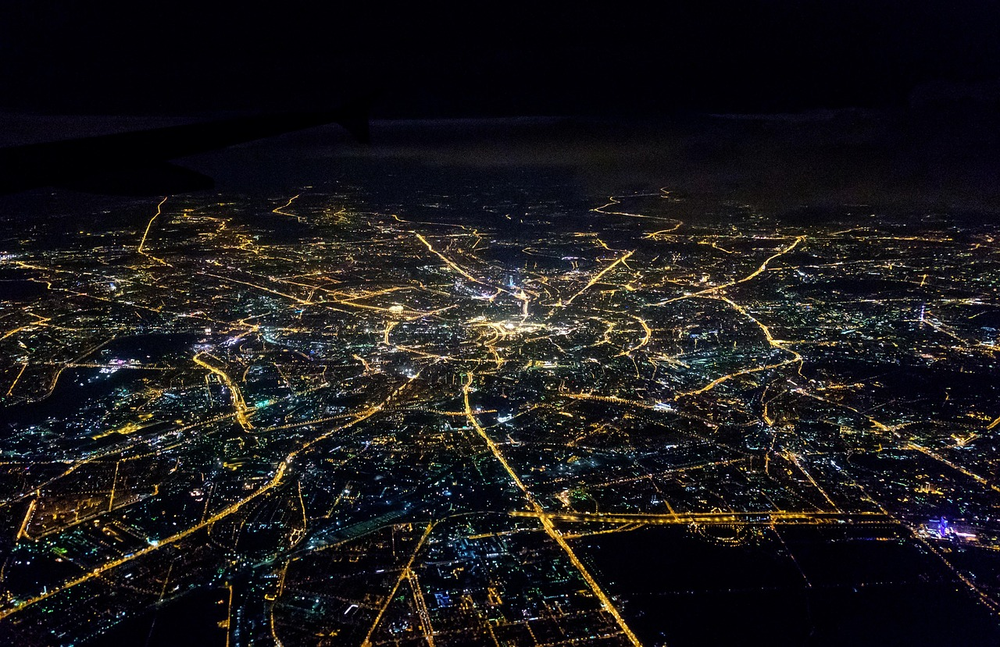
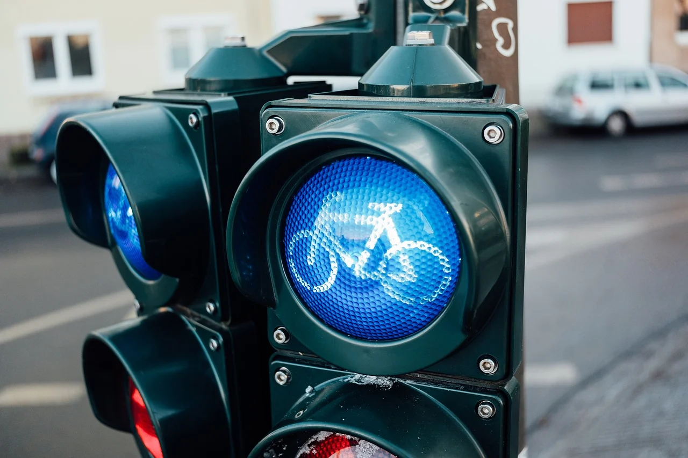

Fogalma
A fenntartható közlekedés olyan közlekedési rendszerek összessége, amelyek képesek kielégíteni a jelenlegi igényeket anélkül, hogy veszélyeztetnék a jövő generációk szükségleteit.

Célja
Hogy a közlekedés ne tegyen kárt hosszútávon nekünk és a környezetnek, illetve, hogy olyan irányba fejlődjünk amerre szükségtelen felhasználni fentarthatatlan energiát vagy anyagot és fejlődjünk minden szempontból.

Eléréshez való szükségletek
- Fenntartható közlekedési módok népszerűsítése: A közösségi közlekedés, kerékpározás és gyaloglás ösztönzése.
- Innovatív technológiák alkalmazása: Elektromos és hibrid járművek elterjedése, valamint a megújuló energiaforrások használata.
- Infrastruktúra fejlesztése: A közlekedési hálózatok korszerűsítése és bővítése a fenntarthatóság érdekében.

Az EU Célkitűzése
Az Európai Unió célja, hogy 2050-re klímasemlegessé váljon, amelyhez a közlekedési ágazatban 90%-kal kell csökkenteni az üvegházhatású gázok kibocsátását.